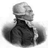

Maximilien Robespierre (1758–1794) Fransız Devrimi’nin liderlerinden biriydi. Devrimci ve cumhuriyetçi idealleri uğruna binlerce hasmını giyotine göndermişti. Terör Dönemi olarak bilinen Paris’teki bu şiddet patlaması, ancak 1794 yılı yazında Robespierre’in kendisinin de tutuklanıp idam edilmesi ile son buldu.

Robespierre başlattığı karmaşadan dolayı vicdan azabı çekmiyordu: “Terör çabuk, haşin ve boyun eğmez adaletten başka bir şey değildir” demişti.
Kuzey Fransa’daki Arras şehrinde doğdu. Parlak bir öğrenciydi. Gençken okuduğu Jean-Jacques Rousseau’nun (1712–1778) bireyci felsefesinden etkilenmişti. Henüz yirmili yaşlarındayken bölgesel meclise seçildi. 1788 yılında Fransa’nın mali durumunda sorunlar baş gösterdi. Kral 16. Louis (1754–1793), 1614 yılından beri ilk kez Ulusal Meclisi toplamak zorunda kalmıştı. O sırada otuz yaşında olan Robespierre mecliste Arras’ı temsil edecekti.
Meclisin toplanması, krala karşı büyüyen öfkeyi dindirmeye yetmedi. 14 Temmuz 1789 yılında Bastille Hapishanesi’nin basılmasıyla Fransız Devrimi başladı. Devrim dalgasıyla kurulan hükümetin içerisinde Robespierre, Jakoben grubu temsil ediyordu. Jakobenler meclisin aşırı sol kanadını oluşturuyordu. Robespierre evrensel oy hakkı, dini tolerans ve askeri reform destekçisiydi.
1792 yılında kralın idamını savundu. Sonraki yıl Kamu Güvenliği Komitesi’ne seçildi. Bu komisyon, devrimle birlikte başlayan toplumsal gerilim ve ayaklanmalara son vermek için kurulmuştu. Grubun dokuz üyesinden biri olmasına rağmen kısa zamanda gayri resmi lideri haline geldi. Sahip olduğu pozisyonu kullanarak Terör Dönemi’ni yönetti.
Aralarında eski kraliçe Marie Antoinette’in de (1755–1793) bulunduğu on binlerce erkek ve kadın, tahıl stoklamaktan hükümeti eleştirmeye kadar uzanan bir dizi suç nedeniyle öldürüldü. Robespierre Fransa’daki durumun olağanüstü olduğuna ve devriminin kazanımlarını korumak için sert davranılması gerektiğine inanıyordu. Sonraki yaz, eski müttefikleri bile fazla ileri gidildiğini düşünmeye başladı. 26 Temmuz 1794 tarihinde bir darbeyle görevinden alındı. Ertesi gün giyotine gönderildi. Öldüğünde otuz altı yaşındaydı.
Ek Bilgiler
1- Robespierre’e “namuslu” lakabı takılmıştı. Zira kendisi için bir beklentisi olmaması, dürüstlüğü ve devrime olan adanmışlığı ile tanınmıştı.
2- Fransa devrim sonrasında yeni bir takvim kullanmaya başladı. Bu takvim kralın düştüğü 1791 yılını yeni dönemin birinci yılı olarak kabul ediyordu.
3- Robespierre 1788 yılında “üçüncü sınıfın” (third estate) temsilcisi olarak Fransa Meclisi’ne girerek siyasete atılmıştı. Monarşi döneminde Fransa, üç sınıfa ayrılmıştı. Birinci sınıf rahipleri, ikinci sınıf asilleri, üçüncü sınıf ise geri kalan herkesi içeriyordu.